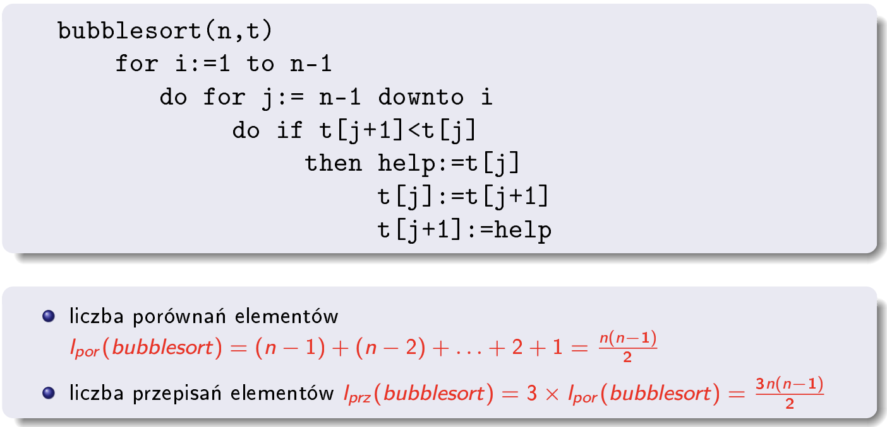

<h1>Sortowanie wewnętrzne</h1>
<h5>Założenia:</h5>
<ul>
	<li>
		bezpośredni dostęp do każdego elementu (np. poprzez jego wskaźnik) tablica mieści się w pamięci RAM;
	</li>
	<li>
		sortowanie za pomocą porównań i wymian elementów wewnątrz <u>jednej</u> tablicy - nśie tworzy się nowych tablic
		i innych
		struktur pomocniczych
	</li>
</ul>

<hr>
<hr>
<h3>Proste</h3>

<h4>Bąbelkowe</h4>
<br>

tablica (elementy oddziel przecinkami): <input type="text" id="bubble-array"><br>
kierunek: <select id="order">
	<option value="desc">od największego</option>
	<option value="asc">od najmniejszego</option>
</select><br>
ilość przebiegów<sup>*</sup>: <input type="number" id="bubble-iterations" min="0" value="0"><br>
ilość zamian<sup>*</sup>: <input type="number" id="bubble-swaps" min="0" value="0"><br>
<input type="button" value="Sortuj" onclick="bubbleSort()">

wynik: <input type="text" id="bubble-result" readonly disabled><span id="bubble-swaps-count"></span><br><br>
* 0/null - bez limitu
<script>
	function bubbleSort() {
		var array = document.getElementById("bubble-array").value.split(",");
		array = array.map(function (x) { return x.trim(); });
		var order = document.getElementById("order").value;
		if (document.getElementById("bubble-iterations").value == "" || document.getElementById("bubble-iterations").value <= 0) {
			var iterations = array.length;
		} else {
			var iterations = document.getElementById("bubble-iterations").value;
		}
		if (document.getElementById("bubble-swaps").value == "" || document.getElementById("bubble-swaps").value <= 0) {
			var swaps = 0;
		} else {
			var swaps = document.getElementById("bubble-swaps").value;
		}
		var result = document.getElementById("bubble-result");
		var i = 0;
		var j = 0;
		var temp = 0;
		var swap_count = 0;
		for (i = 0; i < iterations; i++) {
			for (j = 0; j < array.length - 1; j++) {
				if (swap_count >= swaps && swaps > 0) {
					break;
				}
				if (order == "desc") {
					if (array[j] < array[j + 1]) {
						temp = array[j];
						array[j] = array[j + 1];
						array[j + 1] = temp;
						swap_count++;
					}
				} else if (order == "asc") {
					if (array[j] > array[j + 1]) {
						temp = array[j];
						array[j] = array[j + 1];
						array[j + 1] = temp;
						swap_count++;
					}
				}
			}
		}
		result.value = array.join(", ");
		document.getElementById("bubble-swaps-count").innerHTML = " (zamiany: " + swap_count + ")";
	}
</script>
<hr>


<h4>Przez wstawianie</h4>

<h4>Przez wstawianie połówkowe</h4>

<h4>Przez wybieranie</h4>


<h3>Złożone</h3>